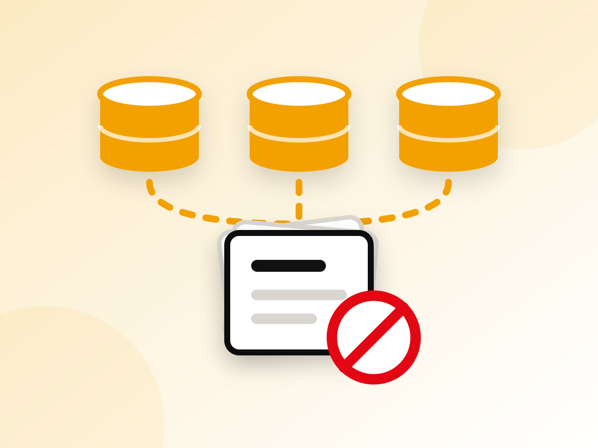

Ne tražiti papire koje država već ima
Never ask for papers the state already has
Država već ima tvoja dokumenta. Ne nosi ih više.
The state already has your papers. Stop carrying them.
Malo duže · Povezivanje i pravilnici · 1–2 godine
A bit longer · Integration and bylaws · 1–2 years

- 18baza povezanih u eZUPdatabases linked in eZUP
- 8institucija u sistemuinstitutions in the system
- 50 €do toliko košta list nepokretnostiup to this for a property sheet
ProblemThe problem
Državni papir nosiš iz državne službe u državnu službu
Carrying a state paper from one state office to another
Od 2016. Zakon o opštem upravnom postupku (čl. 9 i 103) obavezuje službe da same pribave podatke iz službenih evidencija. eZUP povezuje 18 baza osam institucija: matične knjige, MUP, Poresku upravu, PIO, NSZ, CROSO, RGZ i pravosuđe.
Since 2016 the Law on General Administrative Procedure (ZUP, Arts. 9 and 103) obliges offices to obtain data themselves from official records. eZUP links 18 databases of eight institutions: civil registers, MUP, Poreska uprava, PIO, NSZ, CROSO, RGZ and the judiciary.
Ali se pravilo ne poštuje svuda, a mnogi registri nisu u eZUP-u. Zato građani i dalje nose uverenja, a list nepokretnosti plaćaju i do 50 €.
But the rule is not followed everywhere and many registers are not in eZUP. So people still carry certificates, and pay up to €50 for a list nepokretnosti (property sheet).
Šta već postojiWhat already exists
Jedan čvor, osam izvora
One hub, eight sources
Podaci su u državi. Predlog je da služba koja ih treba sama zakuca na vrata druge, a ne ti.
The data is in the state. The proposal is that the office that needs it knocks on the other's door, not you.
Put dokumentaThe path of a paper
Nosiš ili ne nosiš
You carry it, or you do not
DanasToday
- 1Služba A izdaje uverenjeOffice A issues a certificate
- 2Plaćaš taksuYou pay a fee
- 3Nosiš ga u službu BYou carry it to office B
- 4Služba B ga prima i prepisujeOffice B accepts and retypes it
PredlogProposal
- 1Podnosiš jedan zahtevYou file one request
- 2Služba B preuzima podatke iz registraOffice B pulls the data from the register
- 3Odluka bez tvog nošenja papiraA decision without you carrying paper
BrojkeIn numbers
Cena jednog papira
The price of one paper
Izvor: Novosti, list nepokretnosti do 50 € umesto 0 din.
Source: Novosti, a property sheet up to €50 instead of 0 din.
PredlogThe proposal
Četiri pravila
Four rules
- 1
Svi registri u eZUP-u
Every register in eZUP
Uključujući lokalne registre i javna preduzeća.
Including local registers and public companies.
- 2
Papir samo uz obrazloženje
A paper only with a reason
Službenik koji traži papir koji država već ima mora to pisano da obrazloži.
A clerk who asks for a paper the state already holds must justify it in writing.
- 3
Žalba onlajn
Complain online
Građanin može da se žali bez odlaska na šalter.
The citizen can complain without going to a counter.
- 4
Javna statistika po službi
Public statistics per office
Koliko se uverenja izdaje samo da bi se nosilo drugoj službi.
How many certificates are issued only to be carried to another office.
Kako merimo uspehHow we measure success
Javna tabla po službama
A public table per office
Raspored prikaza, ne stvarni podaci. Cilj je da se vidi koja služba i dalje traži ono što već ima.
A layout example, not real data. The goal is to see which office still asks for what it already has.
Uverenja izdata samo da bi se nosila drugoj službi. Primer rasporeda, nema stvarnih podataka.
Certificates issued only to be carried to another office. A layout example with no real data.
Šta treba promenitiWhat has to change
Povezivanje i pravilnici
Integration and bylaws
Pravilo već postoji u zakonu. Nedostaje pokrivenost i primena.
The rule already exists in law. What is missing is coverage and enforcement.
- TehnikaTechnologyPriključiti preostale registre u eZUP, i lokalne i javnih preduzećaConnect the remaining registers to eZUP, local ones and public companies
- OrganizacijaOrganisationObrazac pisanog obrazloženja i onlajn žalbaA written-justification form and an online complaint
- OrganizacijaOrganisationMerenje i objavljivanje statistike po službiMeasuring and publishing statistics per office
Pitanja i odgovoriQuestions and answers
Šta ako…
What if…
Zar to već nije zakon?Isn't that already the law?
Jeste, čl. 9 i 103 ZUP-a. Problem je što pravilo ne važi u praksi svuda i što mnogi registri nisu povezani, pa je potrebna primena, ne novo pravilo.
It is, Arts. 9 and 103 of ZUP. The problem is that the rule does not hold in practice everywhere and many registers are not connected, so what is needed is enforcement, not a new rule.
Podatka nema ni u jednom registru?The data is in no register?
Tada ga daje građanin. Službenik ipak mora da obrazloži zašto traži papir, da se ne traži ono što država već ima.
Then the citizen supplies it. The clerk still has to justify the request, so nothing is asked that the state already holds.
DaljeKeep reading
Povezane idejeRelated ideas
IzvoriSources
- Novosti: list nepokretnosti do 50 € umesto 0 din
- Pravni portal: ZUP čl. 9 i 103, organ sam pribavlja podatke
- MDULS: reforma upravnog postupka i eZUP (18 baza, 8 institucija)
Brojke dolaze iz navedenih izvora. Opis toka, pitanja i spisak promena su nacrt autora i služe za diskusiju.Figures come from the sources listed. The step-by-step flow, the questions and the list of changes are the author's draft, for discussion.